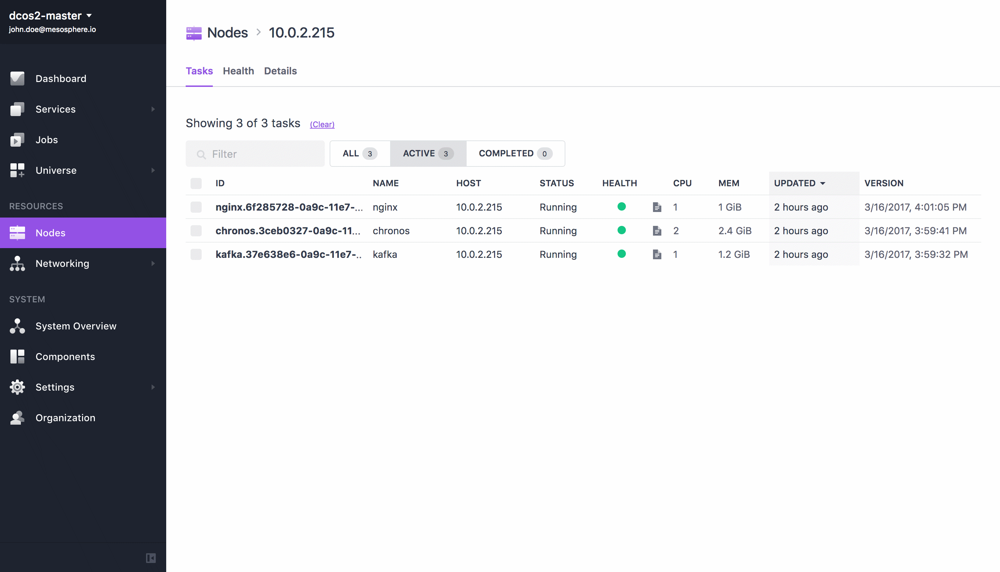
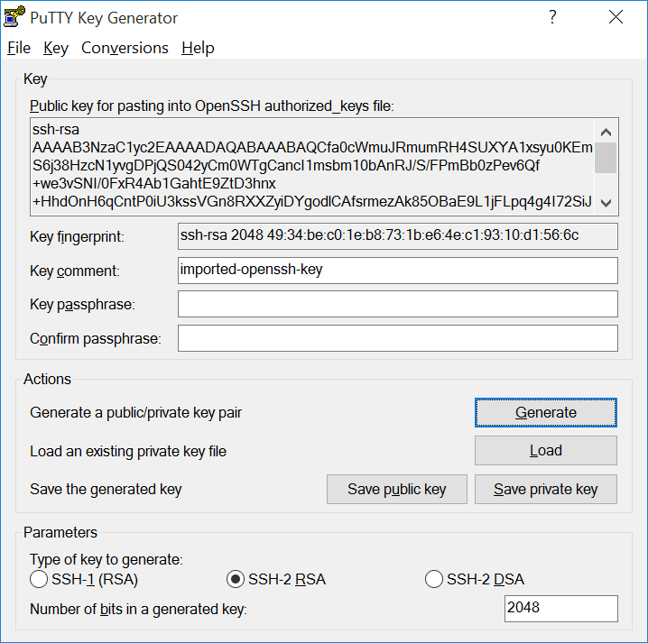
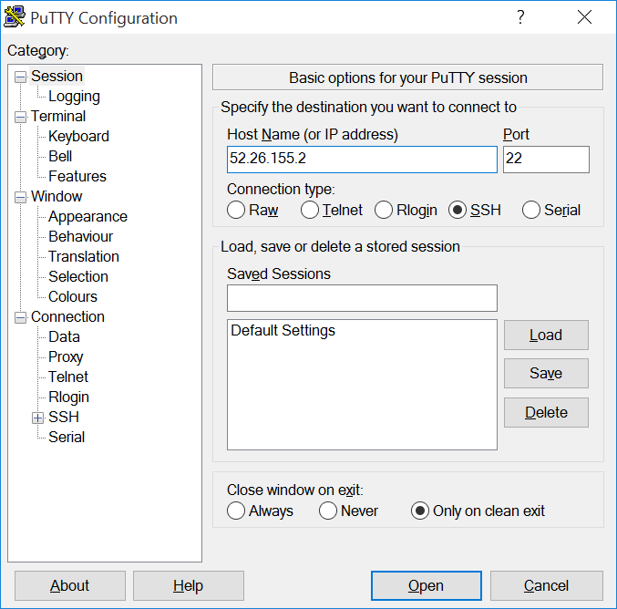
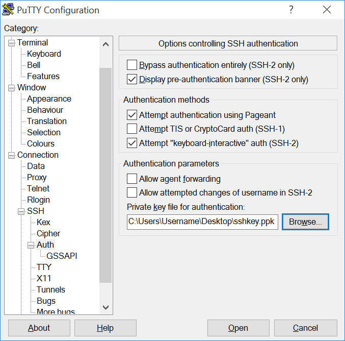
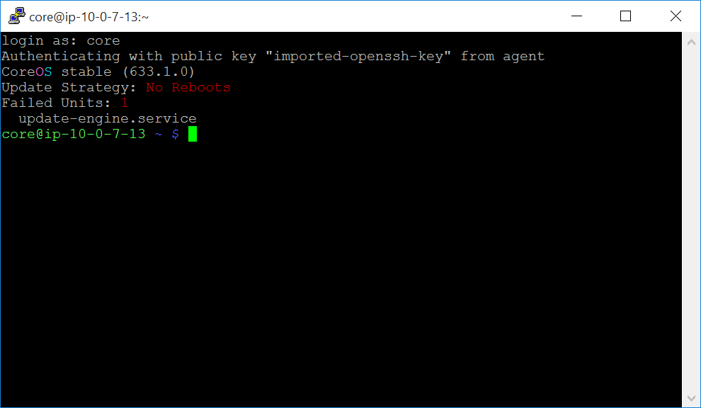
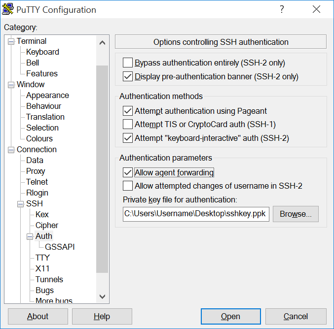
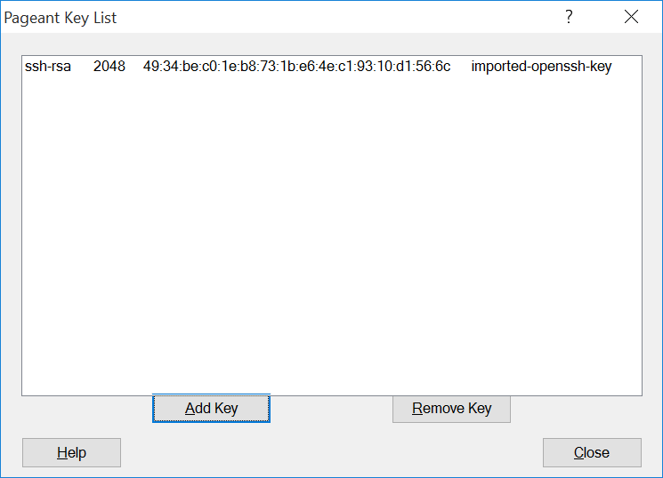

These instructions explain how to set up an SSH connection to your DC/OS cluster from an outside network. If you are on the same network as your cluster or connected by using VPN, you can instead use the dcos node ssh command. For more information, see the dcos node section of the CLI reference.
Requirements:
- An unencrypted SSH key that can be used to authenticate with the cluster nodes over SSH. Encrypted SSH keys are not supported.
SSH to your DC/OS cluster on Unix/Linux (OS X, Ubuntu, etc)
Change the permissions on the
.pemfile to owner read/write by using thechmodcommand.Important: Your
.pemfile must be located in the~/.sshdirectory.chmod 600 <private-key>.pemSSH into the cluster.
From your terminal, add your new configuration to the
.pemfile, where<private-key>is your.pemfile.ssh-add ~/.ssh/<private-key>.pem Identity added: /Users/<yourdir>/.ssh/<private-key>.pem (/Users/<yourdir>/.ssh/<private-key>.pem)To SSH to a master node:
From the DC/OS CLI, enter the following command:
dcos node ssh --master-proxy --leaderTip: The default user is
corefor CoreOS. If you are using CentOS, enter:dcos node ssh --master-proxy --leader --user=centos
To SSH to an agent node:
From the DC/OS CLI, enter the following command, where
<mesos-id>is your agent ID.dcos node ssh --master-proxy --mesos-id=<mesos-id>Tip: To find the agent ID, select the Nodes tab in the DC/OS web interface and click Details.

SSH to your DC/OS cluster on Windows
Requirements:
- PuTTY SSH client or equivalent (These instructions assume you are using PuTTY, but almost any SSH client will work.)
- PuTTYgen RSA and DSA key generation utility
- Pageant SSH authentication agent
To install these programs, download the Windows installer from the official PuTTY download page.
Convert the
.pemfile type to.ppkby using PuTTYgen:Open PuTTYgen, select File > Load Private Key, and choose your
.pemfile.Select SSH-2 RSA as the key type, click Save private key, then choose the name and location to save your new .ppk key.

Close PuTTYgen.
SSH into the cluster.
To SSH to a master node:
From the DC/OS web interface, copy the IP address of the master node. It will be the IP address that you used to connect to the GUI.
Open PuTTY and enter the master node IP address in the Host Name (or IP address) field.

In the Category pane on the left side of the PuTTY window, choose Connection > SSH > Auth, click Browse, locate and select your
.ppkfile, then click Open.
Login as user “core” if you’re running CoreOS. The default user on CentOS is “centos”.

To SSH to an agent node
Prerequisite: You must be logged out of your master node.
Enable agent forwarding in PuTTY.
Caution: SSH agent forwarding has security implications. Only add servers that you trust and that you intend to use with agent forwarding. For more information on agent forwarding, see Using SSH agent forwarding.
Open PuTTY. In the Category pane on the left side of the PuTTY window, choose Connection > SSH > Auth and check the Allow agent forwarding box.
Click the Browse button and locate the
.ppkfile that you created previously using PuTTYgen.
Add the
.ppkfile to Pageant.Open Pageant. If the Pageant window does not appear, look for the Pageant icon in the notification area in the lower right area of the screen next to the clock and double-click it to open Pageant’s main window.
Click the Add Key button.
Locate the
.ppkfile that you created using PuTTYgen and click Open to add your key to Pageant.
Click the Close button to close the Pageant window.
SSH into the master node.
From the DC/OS web interface, copy the IP address of the master node. The IP address is displayed beneath your cluster name.
In the Category pane on the left side of the PuTTY window, choose Session and enter the master node IP address in the Host Name (or IP address) field.
Login as user “core” if you’re running CoreOS. The default user on CentOS is “centos”.
From the master node, SSH into the agent node.
From the Mesos web interface, copy the agent node hostname. You can find hostnames on the Frameworks (
<master-node-IPaddress>/mesos/#/frameworks) or Slaves page (<master-node-IPaddress>/mesos/#/slaves).SSH into the agent node as the user
corewith the agent node hostname specified:ssh core@<agent-node-hostname>